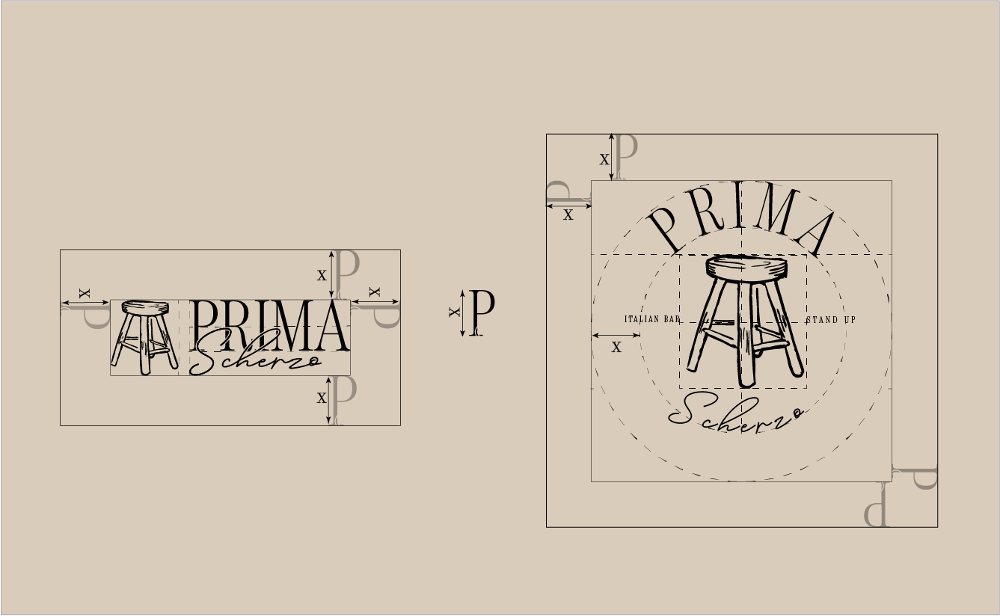
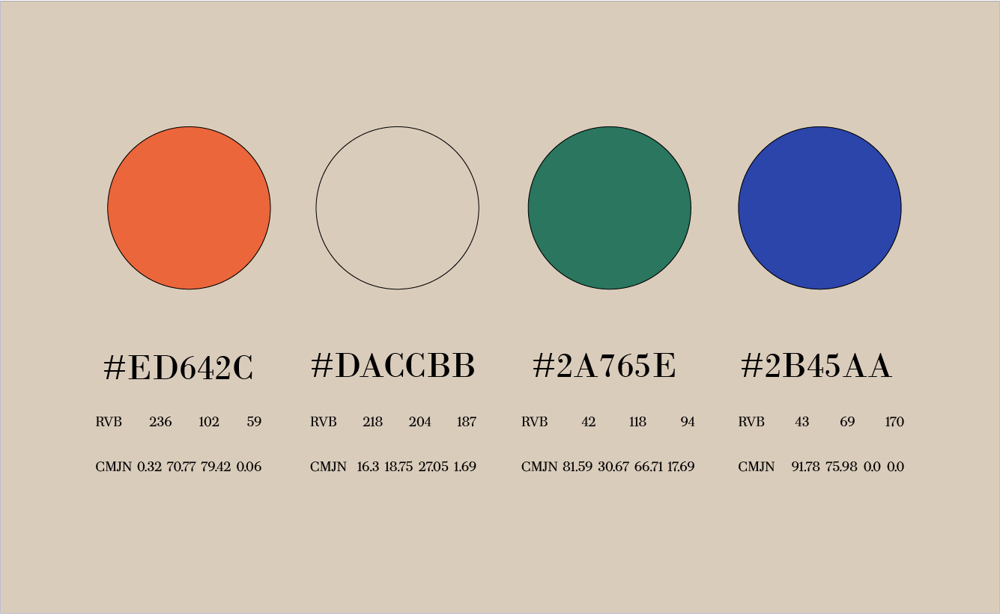
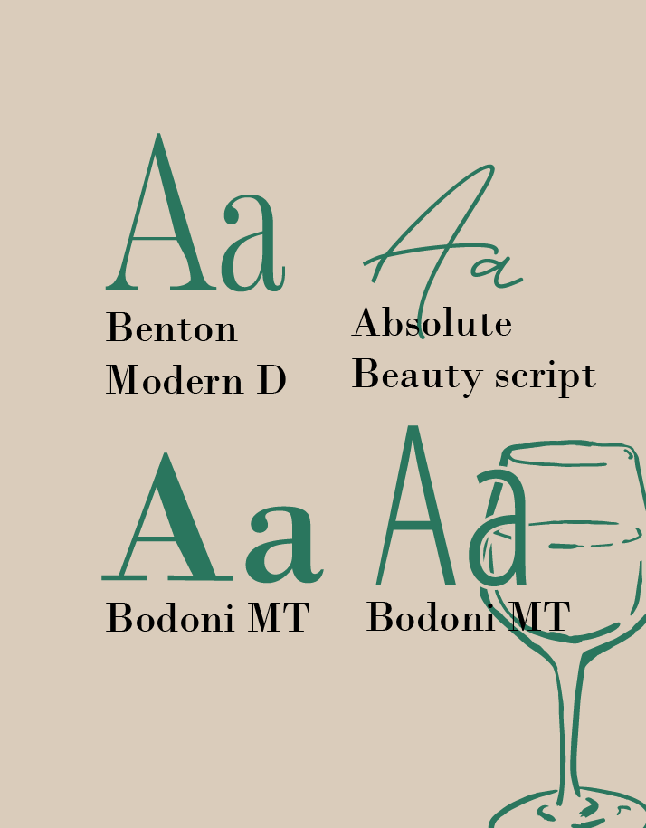
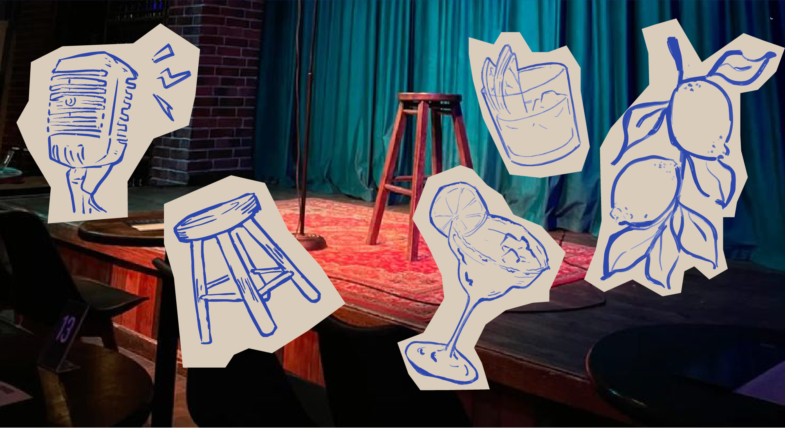

Prima scherzo est un projet réalisé lors d'un challenge 48H, l'objectif était de créer une filiale, ou élaborer un rebranding autour de la chaîne de restaurant Prima family. De ce challenge est né le bar scherzo de la filiale Prima Le concept est simple : un bar à l'italienne, et des stand-ups.
Image principale — 16:9





Image portrait
Image large